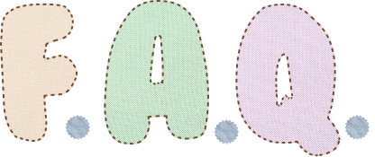

Are the plushies handmade?

yes! I hope to be able to manufacture some plushies in the future, but as of now all plushies are made by me! (Mitchelle)
What materials do you use?

I use many different materials, so it depends on the plush, but some of the materials I use commonly are minky, polyfil, weighted glass of plastic beads, safety eyes and noses, and lots of thrifted blankets! <3
Do you take preorders?

Not at this time, but maybe in future!
Are the plushies meant for kids?

No, Mooshies are not made for young kids. While they are very soft and cuddly, they are also fragile, and may include possible choking hazards.
Are your commissions open? When is the next drop?

Please check my socials to see if my commissions are open, I will have it listed in my bio as well as information about upcoming drops! <3